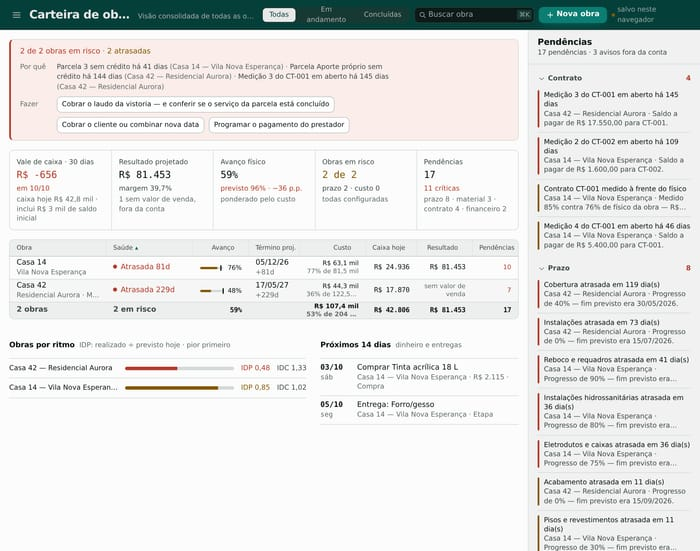
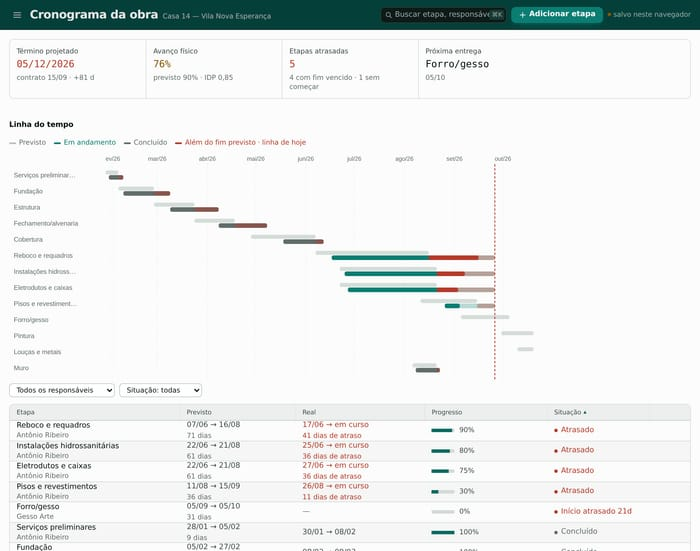
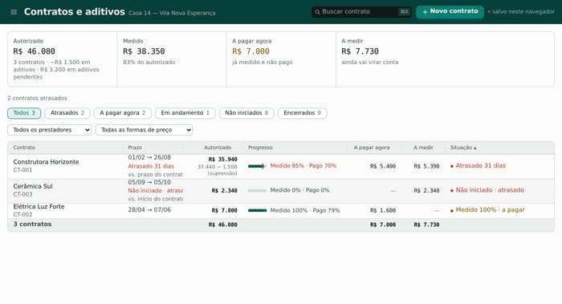
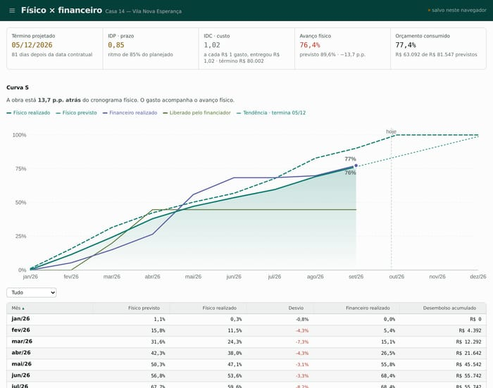
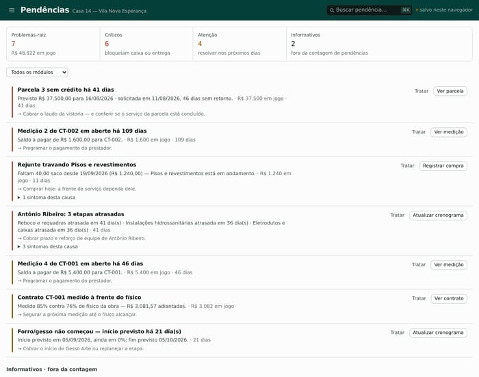
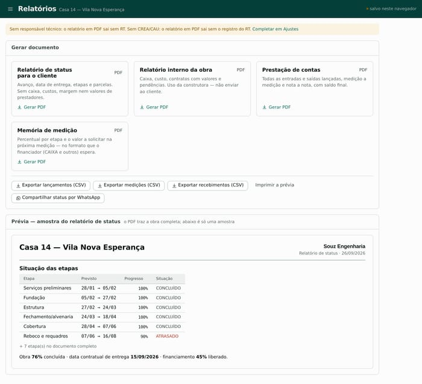

Sua obra fecha no azul?
Contrato, medição, recebimento, cronograma e pendências de cada obra da sua carteira, numa tela só — para você ver o resultado antes do fechamento, não depois.

Cada obra na cabeça de alguém, cada informação num lugar diferente
Planilha por obra, print de WhatsApp, caderno de campo. Funciona até a construtora ter mais de uma obra tocando ao mesmo tempo — aí ninguém mais sabe, em tempo real, se cada uma está dando lucro ou prejuízo. O problema só aparece no fechamento, quando não dá mais para corrigir.
Medição paga além do que foi executado — e ninguém percebe até fechar a etapa.
Parcela do banco parada há semanas — sem ninguém checando por que o crédito não caiu.
Etapa travada porque o material não chegou — e a informação só sobe ao engenheiro depois que a obra já parou.
Fim das planilhas desconexas.
Três etapas, o mesmo lugar
Uma vez, no começo
Tipo de obra, modalidade de contratação e metas antes do primeiro tijolo. Contratos e aditivos, cronograma com dependências e caminho crítico, plano de materiais por etapa.

A cada medição
Medições com trava para não pagar além do contratado, recebimentos — parcela do banco e do cliente —, lançamentos financeiros e diário de obra com fotos, direto do celular.

Sempre à vista
Físico × financeiro na curva S, fluxo de caixa projetado, pendências que apontam o problema e a ação, relatórios em PDF para cliente e financiador.

Todas as suas obras, num painel só
Caixa hoje, resultado projetado e avanço de cada obra, lado a lado. Sem abrir planilha por planilha para saber qual obra está segurando o mês e qual está sangrando caixa.
Ver planosO que já foi liberado e o que já foi feito
Medição trava no que está no contrato — não dá para lançar mais do que foi executado. A curva S compara avanço físico ponderado com o desembolso, para o previsto e o realizado não se perderem de vista um do outro.
Ver obra financiadaPendência não é aviso genérico, é problema com nome e ação
Cada pendência aponta a causa raiz e o próximo passo — não só "algo está errado".

O relatório que você manda pro cliente e pro banco
Status da obra para o cliente, relatório interno, prestação de contas e memória de medição no formato que o financiador pede — gerados a partir dos mesmos dados que você já lançou, sem montar nada à parte.

O campo também usa o Souz
Diário de obra com fotos, registrado direto do canteiro — funciona mesmo sem rede, e sincroniza quando a rede volta. Prestador chamado no WhatsApp em um toque, sem procurar contato.


Financiamento não é só CAIXA — mas se for CAIXA, o Souz sabe lidar
Recebimento por marco físico de qualquer financiador — CAIXA, outro banco, consórcio ou o próprio cliente. Cada parcela mostra a etapa em que está. A memória de medição sai no formato que o financiador espera. E o "liberado × executado" mostra, na hora, quanto já dá para solicitar.

Feito para quem toca mais de uma obra ao mesmo tempo
Construtoras pequenas e médias
Carteira com todas as obras num painel, sem depender de planilha paralela por empreendimento.
Engenheiros responsáveis por várias obras
Cronograma, medição e diário de campo de cada obra, acessíveis de qualquer lugar — inclusive do celular, na visita técnica.
Empreiteiros que precisam prestar contas
Relatório de status pronto para mandar ao cliente ou ao financiador, sem montar planilha explicativa toda vez.

Obra de pequeno porte — o tamanho de obra que o Souz atende todo dia, junto das grandes.
Os dados são seus, e ficam protegidos
Acesso separado por empresa
Cada cliente enxerga só as próprias obras.
Trilha de auditoria
Toda alteração fica registrada: quem mudou, o quê e quando.
Backup exportável
Os dados não ficam presos ao sistema.
Hospedagem no Brasil
Banco de dados na região São Paulo.
Um plano para cada tamanho de carteira
- Todos os módulos do sistema
- Implantação assistida
- Todos os módulos do sistema
- Implantação assistida
- Todos os módulos do sistema
- Implantação assistida
Implantação assistida em todos os planos — alguém do time ajuda a importar sua planilha e configurar a primeira obra.
Quem usa o Souz
Perguntas que quem vai assinar costuma fazer
Serve para qualquer tipo de obra, ou só MCMV/CAIXA?
Serve para qualquer obra. O módulo de recebimento por financiador funciona com CAIXA, outro banco, consórcio ou o próprio cliente — obra financiada é só o diferencial de profundidade, não uma exigência.
Funciona no celular?
Sim. O diário de obra e os módulos de campo foram pensados para uso no canteiro, pelo navegador do celular — sem instalar aplicativo.
Como é a implantação?
Um período assistido, com ajuda para importar sua planilha atual e configurar a primeira obra dentro do sistema.
Posso importar minha planilha?
Sim, existe importação de planilha no formato MCMV. Para outros formatos, a implantação assistida ajuda a organizar a migração.
Onde ficam os meus dados?
Em banco de dados hospedado no Brasil, região São Paulo. Cada empresa só enxerga os próprios dados — o acesso é controlado por obra.
Preciso instalar alguma coisa?
Não. É um sistema web — abre no navegador, no computador ou no celular.
Veja sua obra no Souz
Agende uma demonstração com uma obra real da sua carteira.
ou escreva para gustavo.souza@souztech.com